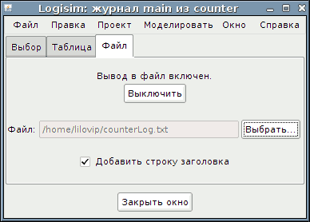

Вкладка «Файл»
Вкладка «Файл» позволяет указать текстовый файл, в который будут записываться результаты измерений (лог).

В верхней части вкладки расположен индикатор активности записи и переключатель для запуска/останова процесса (кнопка станет активной только после выбора файла назначения). С помощью этого переключателя можно приостанавливать и возобновлять запись в файл. Обратите внимание, что при переключении на просмотр другого сеанса моделирования запись в текущий файл автоматически прекращается. При возврате к исходному моделированию возобновить запись в файл потребуется вручную.
В средней части отображается путь к выбранному файлу. Для его изменения или выбора нового файла нажмите кнопку Выбрать.... После этого запись начнётся автоматически. При выборе уже существующего файла программа Logisim-evolution предложит перезаписать его или добавить новые данные в конец.
В нижней части можно настроить добавление строки заголовка с именами выбранных сигналов. При изменении набора отслеживаемых компонентов в файл будет автоматически записываться новая строка заголовка.
Формат файла
Данные записываются в файл в текстовом формате с разделителями-табуляциями (TSV), аналогично представлению на вкладке «Таблица». Единственное отличие состоит в том, что в строке заголовка для внутренних сигналов подсхем указывается их полный иерархический путь. Простой формат позволяет легко импортировать данные во внешние программы для постобработки (например, скрипты на Python/Perl или электронные таблицы).
Чтобы внешние скрипты могли обрабатывать данные в реальном времени, Logisim-evolution сбрасывает буфер записи на диск каждые 500 мс. Если в течение нескольких секунд новые данные не поступают, программа временно закрывает файл и открывает его вновь при появлении новых событий моделирования.
Далее: Руководство пользователя.